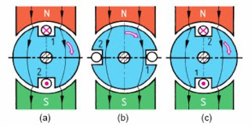
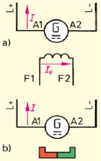
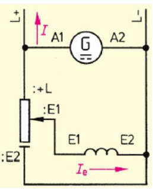
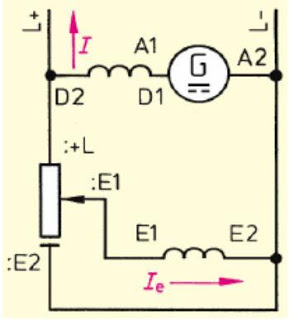

Generator DC
Pengertian
Generator DC merupakan sebuah perangkat Motor listrik yang mengubah energi mekanis menjadi energi listrik. Generator DC menghasilkan arus DC / arus searah. Mesin DC bisa dioperasikan sebagai motor maupun generator.
Terdapat dua jenis motor DC, yaitu motor penguat terpisah, dan motor penguat sendiri. Motor penguat sendiri meliputi:motor seri, motor shunt dan motor kompon yang merupakan kombinasi antara motor seri dan motor shunt. Sedangkan generator pada dasarnya adalah sama, tetapi yang sering digunakan adalah jenis generator terpisah.
Konstruksi Generator DC
Pada umumnya generator DC dibuat dengan menggunakan magnet permanent dengan 4-kutub rotor, regulator tegangan digital, proteksi terhadap beban lebih, starter eksitasi, penyearah, bearing dan rumah generator atau casis, serta bagian rotor.
Prinsip kerja
Prinsip kerja generator DC itu sendiri di hasilkan pembangkit listrik melalui induksi dengan 2 cara yaitu :
- Dengan menggunakan cincin-seret, menghasilkan tegangan induksi bolak-balik.
- Dengan menggunakan komutator, menghasilkan tegangan DC.

Gambar pembangkitan tegangan induksi
Jika rotor diputar dalam pengaruh medan magnet, maka akan terjadi perpotongan medan magnet oleh lilitan kawat pada rotor. Hal ini akan menimbulkan tegangan induksi. Tegangan induksi terbesar terjadi saat rotor menempati posisi seperti Gambar 2 (a) dan (c). Pada posisi ini terjadi perpotongan medan magnet secara maksimum oleh penghantar. Sedangkan posisi jangkar pada Gambar 2.(b), akan menghasilkan tegangan induksi nol. Hal ini karena tidak adanya perpotongan medan magnet dengan penghantar pada jangkar atau rotor. Daerah medan ini disebut daerah netral.
Klasifikasi Generator DC
Generator DC dibedakan menjadi beberapa jenis berdasarkan dari rangkaian belitan magnet atau penguat eksitasinya terhadap jangkar (anker), jenis generator DC yaitu:
-
Generator Penguat terpisah
Pada generator penguat terpisah, belitan eksitasi (penguat eksitasi) tidak terhubung menjadi satu dengan rotor.

Gambar generator penguat terpisah
Terdapat dua jenis generator penguat terpisah, yaitu:
-
Penguat elektromagnetik (a)
Energi listrik yang dihasilkan oleh penguat elektromagnet dapat diatur melalui pengaturan tegangan eksitasi. Pengaturan dapat dilakukan secara elektronik atau magnetik. Generator ini bekerja dengan catu daya DC dari luar yang dimasukkan melalui belitan F1-F2.
-
Magnet permanent / magnet tetap (b)
Penguat dengan magnet permanen menghasilkan tegangan output generator yang konstan dari terminal rotor A1-A2. Karakteristik tegangan V relatif konstan dan tegangan akan menurun sedikit ketika arus beban I dinaikkan mendekati harga nominalnya.
-
Generator Shunt

Gambar diagram generator shunt
Pada generator shunt, penguat eksitasi E1-E2 terhubung paralel dengan rotor (A1-A2). Tegangan awal generator diperoleh dari magnet sisa yang terdapat pada medan magnetstator. Rotor berputar dalam medan magnet yang lemah, dihasilkan tegangan yang akan memperkuat medan magnet stator, sampai dicapai tegangan nominalnya. Pengaturan arus eksitasi yang melewati belitan shunt E1-E2 diatur oleh tahanan geser. Makin besar arus eksitasi shunt, makin besar medan penguat shunt yang dihasilkan, dan tegangan terminal meningkat sampai mencapai tegangan nominalnya.
Karakteristik generator shunt
Tegangan output akan turun lebih banyak untuk kenaikan arus beban yang sama, dibandingkan dengan tegangan output pada generator penguat terpisah.
-
Generator Kompon
Generator kompon mempunyai dua penguat eksitasi pada inti kutub utama yang sama. Satu penguat eksitasi merupakan penguat shunt, dan lainnya merupakan penguat seri.

Gambar diagram generator kompon
Karakteristik generator kompon
Tegangan output generator terlihat konstan dengan pertambahan arus beban, baik pada arus eksitasi penuh maupun eksitasi 50%. Hal ini disebabkan oleh adanya penguatan lilitan seri, yang cenderung naik tegangannya jika arus beban bertambah besar.